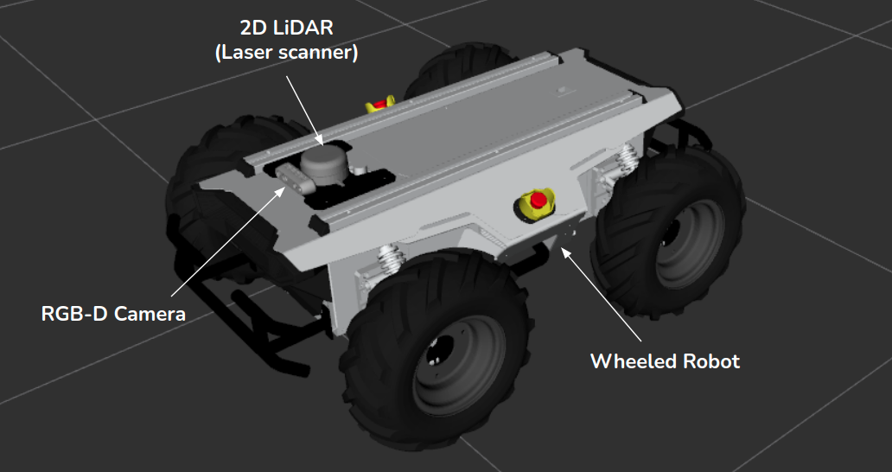
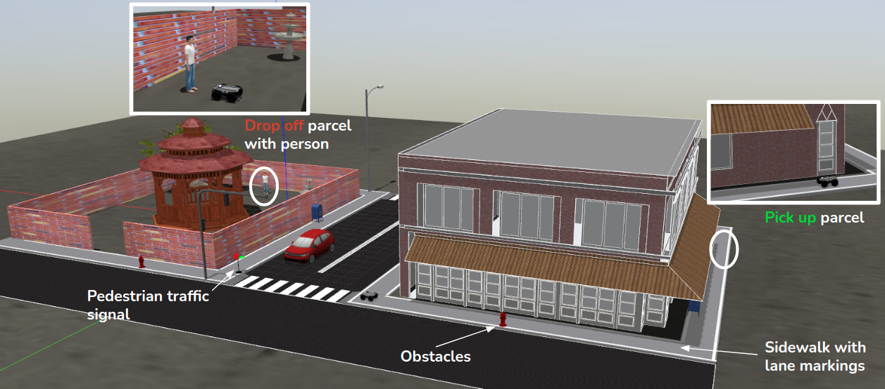

Phase 1: Simulation¶
In this simulation-only phase, teams would work on providing solutions to three (3) fundamental tasks of a delivery robot which are:
- Sidewalk following (with obstacle avoidance)
- Traffic sign detection and recognition
- Go-to-goal navigation (with obstacle avoidance)
The simulation platform to be used in this phase is the Gazebo Simulator. Teams are required to develop, test and submit software to successfully complete these tasks autonomously. This phase will evaluate the teams' capabilities to successfully complete these fundamental tasks required to compete in phase 2 (on the physical robot).
Each task is designed as stand-alone, not depending on other task functionalities, hence, we request teams to complete the tasks separately. The tasks would be evaluated individually and the total team score for this phase would be the sum of individual task scores.
Teams are provided with the delivery robot ROS packages and Gazebo environment models (see description below) to enable them develop and test their solutions (see GitHub Repository).
Delivery Robot¶
The delivery robot is an unmanned ground vehicle (UGV) fitted with 2D LiDAR (light detection and ranging or laser scanner) and an RGB-Depth camera. The figure below shows the delivey robot with sensors labelled.

Simulation Environment¶
The simulation environment used in this phase is modeled as a realistic street with roads, sidewalk, crosswalk, traffic signals and buildings. The sidewalk is fitted with lane markings to ease the task of sidewalk following. The goal of the competition is to pick up a parcel from the store (side of the building) and deliver it to the person in the park. The figure below shows the simulation environment with labels of significant objects.
